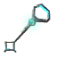

Poissons et divers
Poissons et divers dans Valheim – 33 objets avec biome, provenance, outil requis, recette et utilisation.
Aucun objet trouvé.
 Brise-sceau
Brise-sceau
Un objet permettant de briser un sceau dvergr.
Provenance
- Fabriquer: Table de galdr à partir de 9 ×
 Fragment de brise-sceau
Fragment de brise-sceau
 Brochet
Brochet
Un poisson d'eau douce qui requiert beaucoup d'assaisonnement.
Provenance
- Pêche: Prairies, Forêt noire, Plaines · Appât: Appât de pêche
Utilisation
- Ingrédient pour: Chapeau de pêcheur, Poisson cru
 Cercles de tonneau
Cercles de tonneau
Ces cercles de métal sont parfaitement ronds et permettent de maintenir un tonneau. Il suffit d'ajouter du bois !
Provenance
- Acheter: Haldor · 100 pièces (× 3)
Utilisation
- Matériau de construction pour: Tonneau
 Clé délicate
Clé délicate
S'il y a une clé, il doit y avoir une serrure.
Provenance
- Butin de: Hexen · Prairies, Forêt noire, Marécages, Montagne, Plaines, Terres brumeuses, Terres de cendres, Grand nord, Océan · 10 % de chance
- Cuire: Fonderie à givre à partir de
 Moulage : clé délicate
Moulage : clé délicate

Clé des cryptesPartiellement couverte de boue séchée, elle sent horriblement mauvais.
Provenance
- Butin de: L'Aîné · Forêt noire
 Cloche
Cloche
Pour qui sonne le glas ?
Provenance
- Fabriquer: Forge noire à partir de 3 ×
 Fragment de cloche
Fragment de cloche
Utilisation
- Invoque le boss: Fader (3 ×)
 Coffre en argent d'Hildir
Coffre en argent d'Hildir
Propriété d'Hildir. Si vous le trouvez, merci de me le rapporter.
Provenance
- Butin de: Geirrhafa · Montagne
 Coffre en cuivre d'Hildir
Coffre en cuivre d'Hildir
Propriété d'Hildir. Si vous le trouvez, merci de me le rapporter.
Provenance
- Butin de: Brenna · Forêt noire
 Esprit déchiré
Esprit déchiré
Les restes de Yagluth, un esprit tortueux, déchiré entre ce monde et le prochain.
Provenance
- Butin de: Yagluth · Plaines · 3 ×
Utilisation
- Matériau de construction pour: Fontaine aux feux-follets
 Farine d'avoine
Farine d'avoine
Des flocons d'avoine finement moulus, au grand potentiel.
Provenance
- Transformer: Moulin à partir de
 Flocons d'avoine
Flocons d'avoine
Utilisation
- Ingrédient pour: Pain et viande, Pancakes, Pâte de pancake au four, Petit-déjeuner nordique, Poteitr crue
 Farine d'orge
Farine d'orge
Parfaite pour faire du pain.
Provenance
- Transformer: Moulin à partir de
 Orge
Orge
Utilisation
- Ingrédient pour: Boudin, Brioche crue, Friands au poisson, Pâte à pain, Tarte piquante crue, Tourte au lox non cuite, Tourte rôtie crue
 Graine ancienne
Graine ancienne
Quand vous la rapprochez de votre oreille, vous entendez de minuscules chuchotements à l'intérieur...
Provenance
- Butin de: Brute naingris · Forêt noire · 33 % de chance
- Détruire: Nid de nains gris
Utilisation
- Ingrédient pour: Cœur de la forêt
- Invoque le boss: L'Aîné (3 ×)
 Guinée saumon
Guinée saumon
Une fois fermenté, ce poisson sent encore plus mauvais que le marais d'où il provient.
Provenance
- Pêche: Marécages · Appât: Appât de pêche odorant
Utilisation
- Ingrédient pour: Chapeau de pêcheur, Poisson cru
 Larme de dragon
Larme de dragon
Les dernières larmes gelées d'un dragon, frémissant d'une mystérieuse énergie.
Provenance
- Butin de: Moder · Montagne · 10 ×
Utilisation
- Matériau de construction pour: Table d'artisan
 Manche de faux
Manche de faux
Une base solide pour un outil.
Provenance
- Acheter: Sorcière du marécage · 200 pièces · après avoir vaincu Moder
Utilisation
- Ingrédient pour: Faux
 Mérou
Mérou
À servir avec beaucoup de glucides !
Provenance
- Pêche: Plaines · Appât: Appât de pêche piquant
Utilisation
- Ingrédient pour: Base d'hydromel : anti-morstique, Chapeau de pêcheur, Poisson cru
 Nécessaire de barbier
Nécessaire de barbier
Un nécessaire pour les meilleurs barbiers.
Provenance
- Acheter: Hildir · 600 pièces
Utilisation
- Matériau de construction pour: Barbier
 Œuf
Œuf
Gardez-le au chaud pour découvrir ce qui en sortira... mais qui vient en premier, finalement ?
Provenance
- Acheter: Haldor · 1 500 pièces · après avoir vaincu Yagluth
- Coffres: Quête de Hildir : Tour scellée · 55 % de chance
Utilisation
- Ingrédient pour: Brioche crue, Œuf cuit, Omelette aux champignons, Pancakes
 Œuf de dragon
Œuf de dragon
Bien plus lourd qu'il n'y paraît, un faible bourdonnement en provient.
Provenance
- Ramasser: Nid de drake (œuf)
 Œuf de voltour
Œuf de voltour
Chaud au toucher, et plein de protéines.
Provenance
- Butin de: Voltour · Terres de cendres · 1–2 × · 50 % de chance
- Ramasser: Nid de vautour
Utilisation
- Ingrédient pour: Tourte rôtie crue
 Perche
Perche
Un délicieux poisson à chair blanche.
Provenance
- Pêche: Prairies, Forêt noire, Plaines · Appât: Appât de pêche
Utilisation
- Ingrédient pour: Base d'hydromel : Vananidir, Chapeau de pêcheur, Poisson cru
 Poisson-globe
Poisson-globe
Délicieux quand il est bien cuit, mais il a un certain piquant.
Provenance
- Pêche: Terres brumeuses, Océan · Appât: Appât de pêche brumeux
Utilisation
- Ingrédient pour: Chapeau de pêcheur, Poisson cru
 Poisson-magma
Poisson-magma
On raconte que ce poisson pond ses œufs dans la lave en fusion !
Provenance
- Pêche: Terres de cendres · Appât: Appât de pêche chaud
Utilisation
- Ingrédient pour: Chapeau de pêcheur, Poisson cru
 Poisson-pêcheur
Poisson-pêcheur
Sa petite loupiote permet de mieux voir son adorable minois !
Provenance
- Pêche: Terres brumeuses · Appât: Appât de pêche brumeux
Utilisation
- Ingrédient pour: Chapeau de pêcheur, Poisson cru, Poisson cru et pain
 Poisson-troll
Poisson-troll
Ce poisson est une véritable nuisance dans les cours d'eau de la région.
Provenance
- Pêche: Forêt noire · Appât: Appât de pêche moussu
Utilisation
- Ingrédient pour: Base d'hydromel : force des trolls, Chapeau de pêcheur, Poisson cru
 Saumon nordique
Saumon nordique
Ce poisson aime l'eau presque glacée.
Provenance
- Pêche: Grand nord · Appât: Appât de pêche gelé
Utilisation
- Ingrédient pour: Chapeau de pêcheur, Poisson cru
 Selle d'asksvin
Selle d'asksvin
Le dos des askvins est plutôt rugueux, il convient donc de s'équiper d'une selle si l'on veut les monter.
Provenance
- Fabriquer: Forge noire (niveau 2) à partir de 6 ×
 Flametal, 20 ×
Flametal, 20 ×  Toile de lin, 4 ×
Toile de lin, 4 ×  Tendon de morgen
Tendon de morgen
 Selle d'élan
Selle d'élan
L'élan est une créature noble, mais avec une si belle selle, il pourrait peut-être permettre à un cavalier de monter sur son dos.
Provenance
- Fabriquer: Forge noire (niveau 2) à partir de 4 ×
 Or-sang, 5 ×
Or-sang, 5 ×  Peau de phoque, 5 ×
Peau de phoque, 5 ×  Sapin nordique, 15 × Toile de lin
Sapin nordique, 15 × Toile de lin
 Selle de Lox
Selle de Lox
Utilisez-la sur un Lox pour pouvoir le chevaucher.
Provenance
- Fabriquer: Table de fabrication à partir de 10 ×
 Bouts de cuir, 20 × Toile de lin, 15 ×
Bouts de cuir, 20 × Toile de lin, 15 ×  Sombracier
Sombracier
 Tétra
Tétra
Comme il passe son existence dans le noir, il n'a pas besoin d'yeux.
Provenance
- Pêche: Montagne · Quête de Hildir : Caverne hurlante, Grotte de givre · Appât: Appât de pêche froid
Utilisation
- Ingrédient pour: Chapeau de pêcheur, Poisson cru
 Thon
Thon
Le poulet des mers...
Provenance
- Pêche: Océan · Appât: Appât de pêche lourd
Utilisation
- Ingrédient pour: Chapeau de pêcheur, Poisson cru
 Totem gobelin
Totem gobelin
Contient le pouvoir ancien de Yagluth.
Provenance
- Butin de: Berserker gobelin · Plaines · 10 % de chance
- Coffres: Stonehenge · 8,1 % de chance
- Ramasser: Tour de pierre (Montagnes), Village fuling
Utilisation
- Invoque le boss: Yagluth (3 ×)
 Vieille de corail
Vieille de corail
Il a vu des choses... des choses terrifiantes...
Provenance
- Pêche: Océan · Appât: Appât de pêche lourd
Utilisation
- Ingrédient pour: Chapeau de pêcheur, Poisson cru